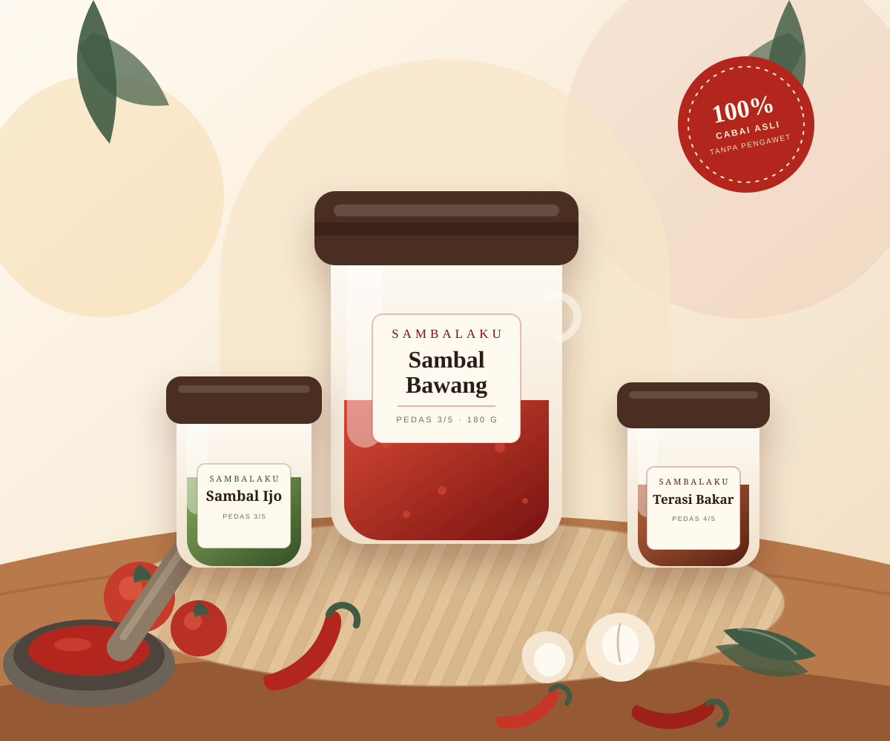
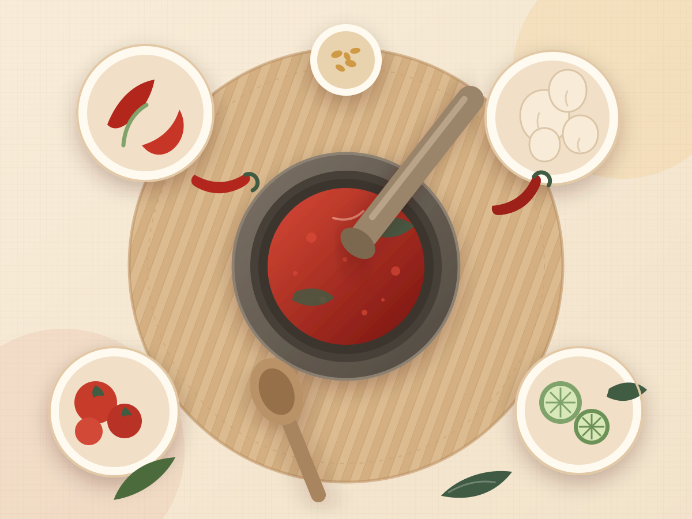

Cabai segar, bukan bubuk
Dipilih dari pasar lokal setiap minggu.
Sambal rumahan dari dapur Yogyakarta
Enam resep sambal tradisional dari berbagai daerah, dimasak dalam batch kecil dengan cabai segar dan tanpa pengawet. Tinggal buka toples—nasi hangat langsung terasa istimewa.

Dipilih dari pasar lokal setiap minggu.
Hanya cabai, bumbu, minyak, dan api.
Racikan keluarga yang tidak disingkat.
Botol kaca + bubble wrap, siap kirim.
Paling dicari
Mulai dari yang klasik sampai yang berani. Semua dimasak dengan resep asli daerahnya.

Dapur kami
Sambalaku bermula dari lesung kecil di dapur Ibu Ratna di Yogyakarta. Resepnya sederhana, tapi tidak pernah buru-buru: cabai ditumbuk kasar, bumbu disangrai, lalu dimasak sampai minyaknya memerah.
Dari pasar ke toplesmu
Kami percaya sambal yang enak tidak perlu bahan ajaib—cukup bahan bagus dan waktu yang cukup.
Cabai, bawang, tomat, dan terasi dipilih langsung dari pasar lokal. Yang tidak segar tidak masuk dapur.
Bumbu ditumbuk kasar lalu disangrai perlahan. Proses ini yang membuat rasa pedasnya bulat, bukan sekadar pedas.
Dimasak hingga matang sempurna, dikemas dalam botol kaca steril, lalu dikirim ke seluruh Indonesia.
Kata pencinta pedas
★★★★★
“Sambal bawangnya persis kayak bikinan nenek di kampung. Pedasnya nendang tapi masih bisa nambah. Sudah repeat order tiga kali.”
★★★★★
“Sambal ijo-nya wangi terasi bakar. Dimakan sama nasi panas dan ikan goreng, langsung habis satu toples. Kemasannya juga rapi.”
★★★★★
“Aku bukan penyuka pedas, tapi sambal mangga ini pas banget asam-segarnya. Cocok buat kuah Soto. Pengiriman cepat dan aman.”
Meja makan menunggu
Pilih sambal favoritmu hari ini. Pesanan sebelum jam 14.00 WIB dikirim di hari yang sama.